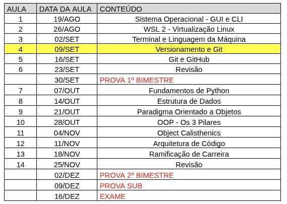
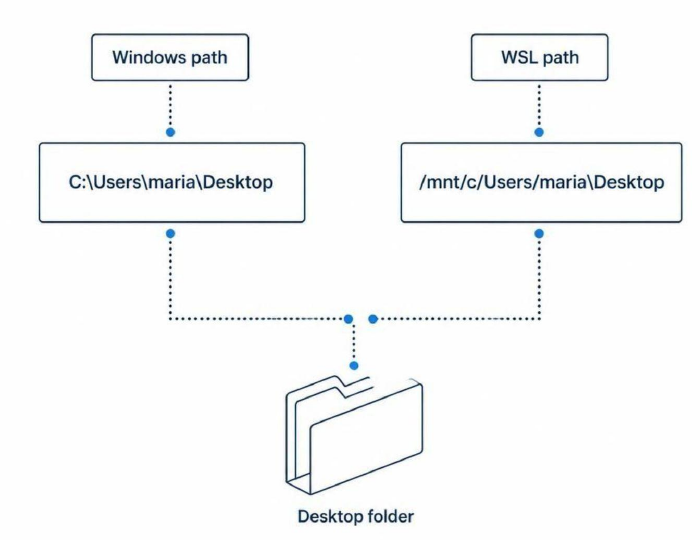
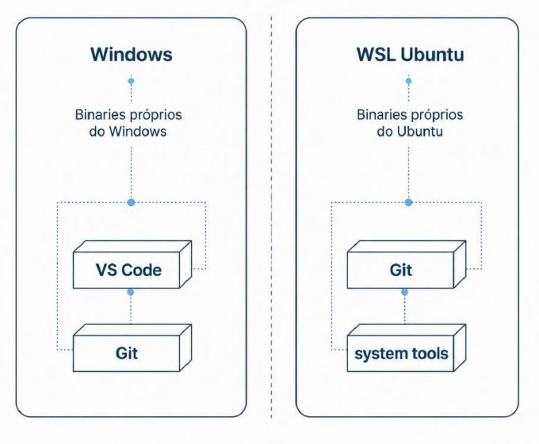
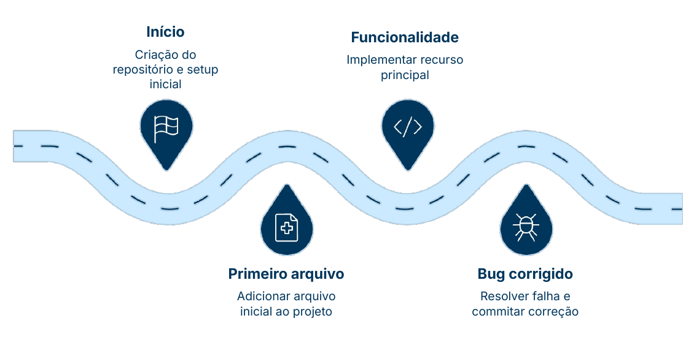
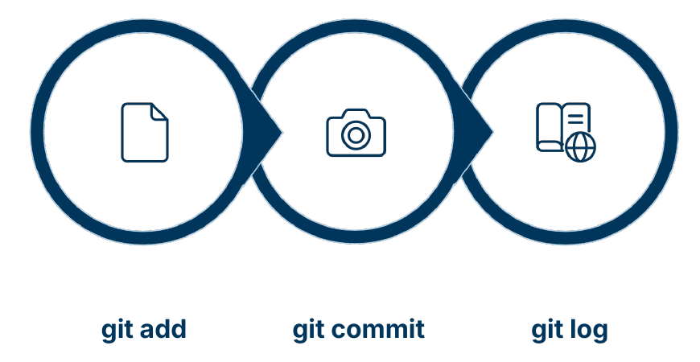
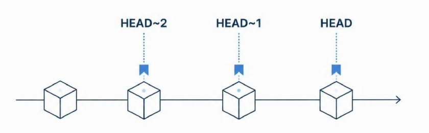

Prof. Luan Lourenço

Os dois sistemas parecem isolados, mas compartilham o mesmo disco físico.
/mnt/c/
Endereço de um arquivo no sistema. Sequência de diretórios até o destino — como um endereço postal, só que com pastas.
Mesmo lugar, dois endereços. Desktop da usuária maria:

Existem em Linux e Windows — essenciais para navegar e instalar ferramentas.
Cada ambiente tem seus próprios binários. Instalar o Git no Windows não o instala no WSL — e vice-versa.
mkdir, ls, cd — já vêm instalados no Linux
O que é o Vim? Editor de texto no terminal CLI, sem interface gráfica. Nativo do Linux/Unix — não existe no Windows nativamente.
vim arquivo.txt
:q! → sair sem salvar:wq → salvar e sair
Instalado no Windows — é ele quem gerencia tela e janelas.
Cópias manuais, incompletas, sem histórico real.
O risco do "salvar como"
O Git resolve exatamente esse caos — de forma elegante e rastreável.
No Windows: baixar instalador em git-scm.com e seguir o assistente gráfico.
No WSL (Ubuntu):
Por que instalar nos dois? Cada ambiente é isolado. O Git do Windows não existe dentro do WSL.
Bônus: VS Code no WSL. Após instalar o VS Code no Windows, abra qualquer pasta Linux com:
O . aponta para a pasta atual.
Pense em fotografias. Cada commit é um retrato completo de todos os arquivos do projeto naquele instante.

Por ora: linha única, sem ramificações. Branches ficam para outra disciplina.

Antes de fazer qualquer commit, o Git precisa saber quem você é. Esses dados aparecem em cada commit registrado no histórico do projeto.
--global aplica a configuração para todos os repositórios da sua máquina. Você só precisa fazer isso uma vez por computador.
git checkout — restaura um arquivo para como estava em um commit específico.
git diff — mostra linha a linha o que mudou desde o último commit — antes de decidir o que registrar.
O histórico vive na pasta .git. Criada pelo git init, guarda todos os commits localmente.
Ainda não existe cópia em outro lugar. Isso é tarefa do GitHub — próxima aula.

O que é HEAD? Referência automática do Git que aponta sempre para o commit atual — sem precisar copiar nenhum hash.
Soft Delete — --soft
Move o HEAD para um commit anterior, mas preserva as mudanças nos arquivos.
Como guardar uma foto numa gaveta — sem rasgar nada.
Hard Delete — --hard
Move o HEAD para trás e descarta definitivamente todas as mudanças posteriores.
Sem segunda chance. Use com cautela.
Um conceito que se repete. A mesma lógica aparece em Banco de Dados:
deletado=true — dado continua na tabela, recuperávelDELETE — linha removida definitivamenteReconhecer padrões que se repetem entre disciplinas é pensar como engenheiro de software.
Resumo da aula
/mnt/c/Próxima aula: GitHub — compartilhar o histórico com o mundo.
docs.google.com/forms/d/e/1FAIpQLScq8Jid2BV3f8Ngbmh0XDYsnez7BO_mlcSeTf7Ku5XuB2LDxg/viewform